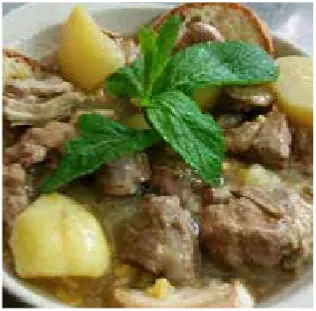

Chapter 5 · Matching food with wine
Ensopado de Borrego

This dish is based on lamb. Slices of bread in the meat stock play a leading role in the recipe, and it is accompanied by boiled potatoes. It is prepared with onion, garlic, tomato, parsley, bay leaf, pepper, coarse salt, paprika, olive oil, white wine, and vinegar, and garnished with fresh mint leaves.
Wine: The rich fattiness of young lamb matches with the wine tannins to create a smooth characteristic in the mouth. Powerful red wine with lots of ripe fruit, round tannins and acidity like Alentejo Trincadeira variety; or Dao Touriga Nacional.
Explanation: perfect for colder days, it’s a classic Easter dish. The strong texture and flavour of lamb meet and his spicy notes of fresh herbs needs the alcohol content of a heavy red.